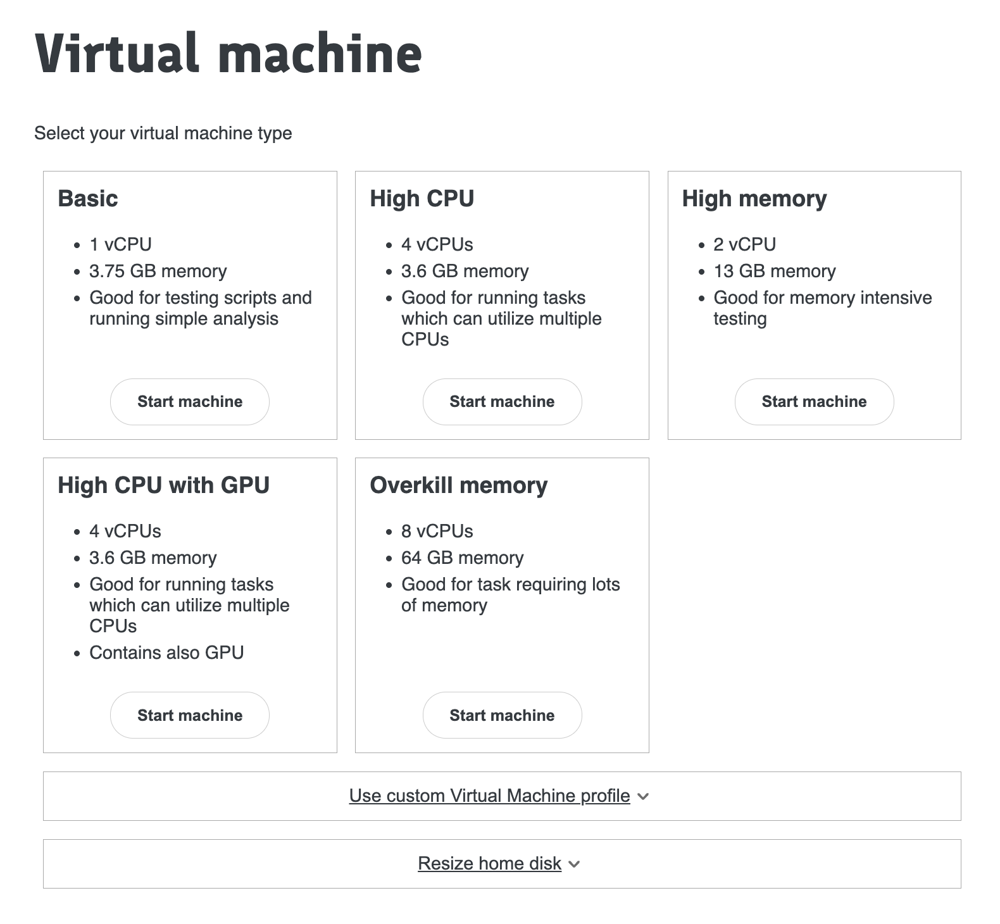
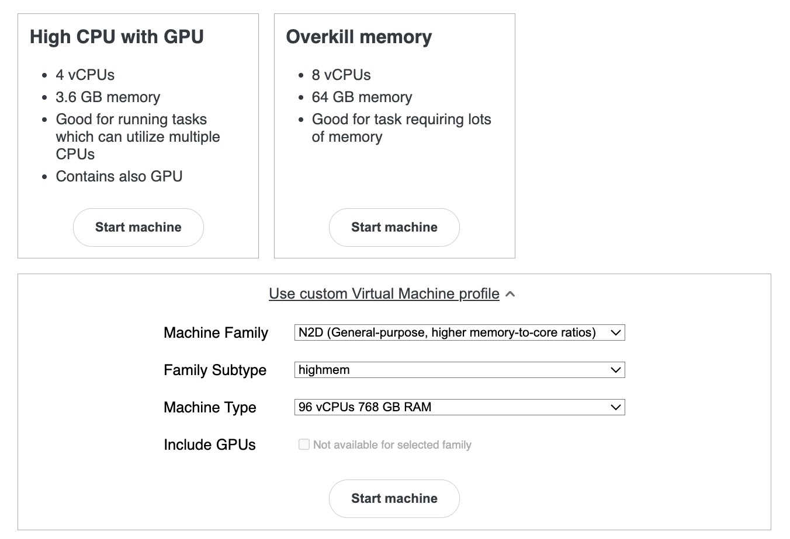

Getting started as a new user¶
STU WOZ HERE 2025-07-24
Steps to get access¶
- All users must read and accept the Genes & Health Code of Conduct.
- All users must complete the NHS Data Security Awareness Level 1 training before they're granted access to Genes and Health data.
Users with an academic email address (.ac.uk) or an NHS email address (@nhs.net) can register for the Data Security Awareness training at e-learning for Healthcare.
Wellcome Sanger Institute employees
If you're a Wellcome Sanger Institute employee, please use ODS Code 8J947 and select Genome Research Limited from the list of organisations when you register for the course.
Non-academic users can register for the training course at eIntegrity Healthcare e-learning.
After completing the NHS Data Security Awareness Level 1 training course, all users must attest to the Genes & Health Code of Conduct and upload their certificate to Genes & Health new user registration system. Please contact Genes and Health at genesandhealth@qmul.ac.uk for instructions on how to access the new user registration system.
These steps are important for our NHS Digital Data Security and Protection Toolkit, and ISO 27001 accreditation.
Caution
Users who have not completed the Data Security Awareness training or attested to the Code of Conduct are subject to having their account deactivated.
Setting up a profile¶
When first set up, users will get an email from Google (to their normal email address). This will have a username@genesandhealth.qmul.ac.uk username. You need to Add this as a Profile in Google Chrome. Please do not try to use any other browser than Google Chrome!
Note: This username is not an email address, and we will not send email to it. It cannot receive email; it is just a username for the TRE.
Once you have done this, go to Manage Your Account and Security and turn 2 Step Verification on. You will need to enter a phone number and get a code by SMS/text message. You cannot access the TRE without this enabled.
Starting the TRE¶
Having selected your username@genesandhealth.qmul.ac.uk account as your Chrome Profile, enter the G&H TRE’s URL in your Chrome browser. Your URL will start with https://new-production.genesandhealth.qmul.ac.uk/. The full URL is dependent on your sandbox and can be obtained from the table below.
This will take you to the TRE login page. You will be asked to enter your username and password. The username is the one you have been given by the Genes and Health team, and the password is the one you have set up when you first logged in.
If you want to go a specific sandbox, you can use the following URL table:
Choosing your required machine configuration¶
Once logged in, you will be taken to the Virtual Machines page where you can start a new machine or connect to an existing one.

You will be offered a variety of virtual machine types.Warning: Choose the Basic machine unless a script requires high memory or increased CPU capacity, and is ready to go. Test your script on the Basic machine first, as other options are more expensive.
Note: Some machine types have many CPUs, which are suitable for multithreaded applications like plink or regenie that can fully utilise them. These applications may sometimes run input/output operations too quickly for standard Google bucket storage, requiring you to copy key files to faster local storage (see below).
Choosing a custom machine configuration¶
It is possible that sometimes you may require a Virtual Machine that offers resources different to the standard flavors i.e. higher-memory, higher-cpu or memory-optimised instances. You can choose a custom VM configuration from the Virtual Machines page by expanding the Use custom Virtual Machine profile section at the bottom.

Warning: Choose the Use custom Virtual Machine profile only when absolutely necessary, use Basic machine unless a script requires high memory or increased CPU capacity. Excess use of higher-spec machines can significantly impact running costs. Test your script on the Basic machine first, as other options are more expensive.Switching off the machine¶
Your virtual machine will keep running for 24 hours if you are doing nothing. You can disconnect from Chrome, turn your laptop off, and then you will be straight back into the exact same machine when you connect again (within 24h). If you have Linux jobs running, the machine will keep going while these run (however long) plus another 48h.
Warning: Keeping machines running in the background costs money. So please actively shutdown (if you do not need the extra 48h) using the little off button on the bottom of the side menu.
GWAS Training Video¶
Genes & Health have provided a number of training videos to help researchers get started with the Trusted Research Environment (TRE). This is a 45-min tutorial in which GWAS using regenie is demonstrated (300Mb with mp4 format, updated 5 oct 2022). This video is a recording of a live demo session, and the quality may not be perfect. It is recommended to watch the video in full screen mode. Please feel free to download the video and watch it at your convenience.
https://dl.dropboxusercontent.com/s/k6h5botp53xk3l6/TRE%20Training-20220928_160450-Meeting%20Recording.mp4?e=1\&dl=0
GWAS Example¶
You can find an example regenie script for binary trait GWAS below. Please feel free to adapt and reuse this script.
Caution
Please let your script run first on the cheap 2-core machine. Regenie has excellent multithreading capabilities and will perform best on the 64-core high-performance machine, but this option is expensive. The 2-core machine is sufficiently fast on a large multicore machine, allowing you to run it directly from the command line using a single all-chromosome pgen input file, without the need for HPC or splitting by chromosome. Regenie will utilise all available threads minus 1 by default, meaning the 64-core machine will run 63 times faster for the compute steps compared to the 2-core machine. It is fast enough on a large multicore machine to run several phenotypes. If you intend to run 1000 phenotypes, you will need to use Google HPC / WDL.
## RUN THIS FROM THE FOLDER WITH THE
## COVAR/PHENO FILES AND WHERE YOU WANT THE OUTPUT
## this is for BINARY TRAITS
## remove the --bt and firth etc options for quant traits, see the online regenie manual https://rgcgithub.github.io/regenie/options/
## first copy big files to local storage ivm SSD for better i/o than with google storage buckets
## regenie will sometimes crash if reading direct from library-red due to slow i/o
## cp /genesandhealth/library-red/genesandhealth/GSAv3EAMD/Jul2021_44k_TOPMED-r2_Imputation_b38/topmed-r2_merged_version03/chrALLincX.dose.merged_INFO0.3_MAF0.00001_F_MISSING0.2.8bit.sorted.p* /home/ivm/Documents/
## CHANGE THE DATE EACH RUN ##
daterun=2022_07_20
covarfile="/genesandhealth/library-red/genesandhealth/GSAv3EAMD/Jul2021_44k_TOPMED-r2_Imputation_b38/GNH.44190.noEthnicOutliers.covariates.20PCs.tab"
## updated to covarfile with correct FID IID structure 15 July 2022
phenofile="/genesandhealth/library-red/genesandhealth/phenotypes_curated/version005_2022_06/1stoccurrence_3digitICD10_1SNOMEDto1ICD10/2022_06_version005_3digitICD10_1to1_42029withbothICD10andGSAJul2021.txt"
## these are the custom phenotypes: "/genesandhealth/library-red//genesandhealth/phenotypes_curated/version005_2022_06/custom/2022-06-15_big_regenie_phenoFile.txt"
grmfile="/genesandhealth/library-red/genesandhealth/GSAv3EAMD/Jul2021_44k_TOPMED-r2_Imputation_b38/bfile_forSAIGEgrm_44396_chipgenotypes_indep-pairwise_500_50_0.2_LDpruned_NotChrY"
## regenie will run all phenotypes in the phenoFIle if you dont specify --phenoCol or --phenoColList
## beware the .log file does not have phenotype name in its filename (because it is designed for running many phenotypes at once), can get overwritten if run multiple times using same $daterun
## if want to run male-only or female-only analysis, best to use --keep with a list of individuals in Step1 Step2 rather than --sex-specific. Because sex-specific uses the sex in the bed or pgen files not from the covariate file. And sex is NA in the pgen file we have made
regenie \
--step 1 \
--bed "$grmfile" \
--covarFile "$covarfile" \
--phenoFile "$phenofile" \
--phenoExcludeList PseudoNHS_2022_02_08 \
--phenoCol ICD10__E10,ICD10__E11 \
--minCaseCount 100 \
--bsize 1000 \
--bt \
--lowmem \
--lowmem-prefix tmp_rg \
--gz \
--verbose \
--out "$daterun"_fit_binary_out
regenie \
--step 2 \
--pgen /home/ivm/Documents/chrALLincX.dose.merged_INFO0.3_MAF0.00001_F_MISSING0.2.8bit.sorted \
--covarFile "$covarfile" \
--phenoFile "$phenofile" \
--bsize 1000 \
--minMAC 20 \
--minINFO 0.6 \
--bt \
--firth --approx \
--pThresh 0.01 \
--pred "$daterun"_fit_binary_out_pred.list \
--gz \
--verbose \
--out "$daterun"_GNH_binary_GWAS_firth
## END ##